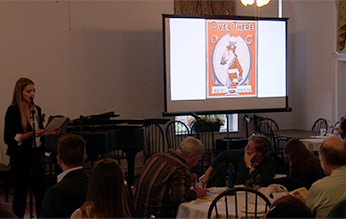
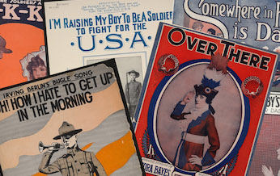
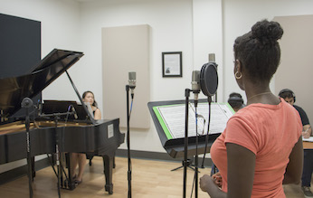

After the War Is Over

Just a Baby’s Prayer at Twilight
")
United States Democracy March

Good Morning Mr. Zip-Zip-Zip!


Video: ReSounding the Archives

About:
ReSounding the Archives is an interdisciplinary collaboration that brings together digital humanities, history, and music.
